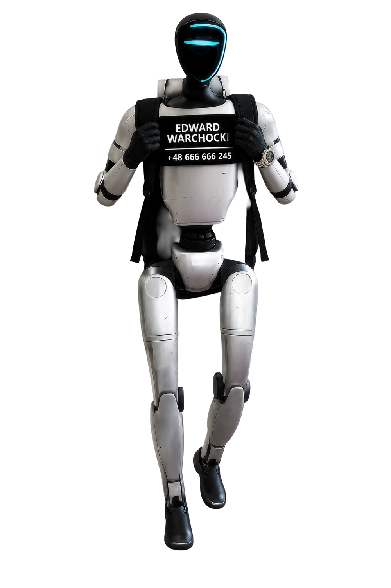
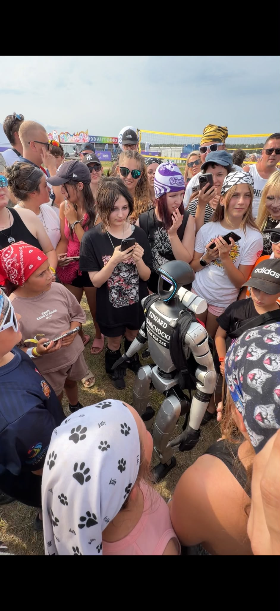
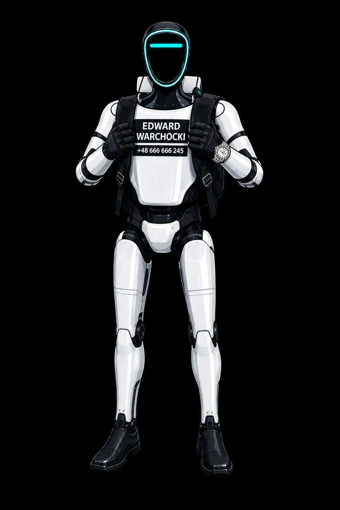

wyświetleń wzmianek
Edward w mediach i internecie✳ ROBOT. OSOBOWOŚĆ. FENOMEN.
JEDEN ROBOT.
MILIONY
EMOCJI.
Gdzie pojawia się Edward, wyciągają się telefony.
Jedno spotkanie zamienia się w tysiące historii.
EDWARD WARCHOCKI / POWERED BY MERA ROBOTICS

INTERNET
GO ZNA.↗
GO ZNA.↗
✳
3 MLD+wyświetleń wzmianek*
EDWARD WARCHOCKI01 / THE ROBOT
01 / SKALA ZJAWISKADane organizatora · 10.09.2026
wyświetleń własnych kanałów
Łącznie na pięciu platformachobserwujących
Suma z platform, nie unikalne osobymediana wyświetleń filmu
Według zestawienia organizatoraNIE JEDEN VIRAL. CAŁY EKOSYSTEM.WSZĘDZIE,
WSZĘDZIE,
GDZIE SĄ LUDZIE.
Od krótkiej rolki po dłuższy film. Edward przyciąga uwagę na pięciu platformach jednocześnie.
Wyświetlenia własnych kanałów według platform*02 / EFEKT EDWARDAUGC = TREŚCI TWORZONE PRZEZ WIDZÓW
ON SIĘ POJAWIA.
LUDZIE PUBLIKUJĄ.
Najmocniejszy content powstaje po drugiej stronie kamery. Spotkanie, reakcja, telefon w górę. I historia, która idzie dalej.
SIŁA ZWYKŁYCH WIDZÓW↗
92%filmów w bazie pochodzi od osób, które opublikowały w niej tylko jeden materiał o Edwardzie.
JEDNO SPOTKANIE.
WŁASNA PERSPEKTYWA.
WŁASNA PERSPEKTYWA.

KAŻDY MA SWÓJ KADR ↗filmów w analizowanej bazie
wyświetleń materiałów widzów
Tak wygląda zainteresowanie, które wychodzi poza własne kanały Edwarda.
Analiza bazy organizatora · stan na 10.09.202603 / ZOBACZ TO NA WŁASNE OCZY5 filmów. Prawdziwe spotkania.
TEGO SIĘ
NIE PRZEWIJA.
Tłumy, spontaniczne reakcje i telefony w górze.
Edward w swoim naturalnym środowisku.
04 / NASTĘPNY ROZDZIAŁPROJEKT TRASY · JESIEŃ 2026
POLSKO,
NADCHODZI TOUR 67.
67 szkół. Dwie ekipy. Robot prowadzący lekcję, spotkania na żywo i historia opowiadana każdego dnia przez ludzi.
PLANOWANY START01.10.2026
PLANOWANA META18.12.2026
Trasę i terminy potwierdzimy
po uzgodnieniu programu z partnerem.
67szkół w projekcie
32,8 tys.uczniów w wybranych szkołach
120 minprogramu podczas wizyty
2 ekipywspólna historia z dwóch tras
DWIE DROGI. TEN SAM CEL.
EKIPA 6 42 SZKOŁYEKIPA 7 25 SZKÓŁ
Schemat idei wariantu A. Przebieg do potwierdzenia.
Trasa, która sama jest historią.
Przystanki układają się na mapie w liczbę 67. Dwie ekipy rysują jej cyfry, a każdy kolejny odcinek odsłania następny fragment trasy.
2 314 kmłączna długość trasy
60 miast i miejscowościw 13 województwach
289 mśrednio ze szkoły do sklepu
42 + 25 szkółpodział między dwie ekipy
Przykładowe przystanki: Lubin · Tychowo · Złotoryja · Poznań · Wołczyn
JEDEN DZIEŃ TOURUSpotkanie się kończy.
Spotkanie się kończy.
Historia dopiero zaczyna.
- 01Rano: szkoła i robot na żywo
Rozmowa, pytania i lekcja z Edwardem na MERA OS.
- 02Po pokazie: wspólne kadry
Zdjęcia, filmy, reakcje i spotkanie przy sklepie partnera.
- 03Wieczorem: kolejny odcinek
Vlog z trasy, relacja i materiały publikowane przez widzów.
Założenia oferty z 10.09.2026. Liczba uczniów opisuje wybrane szkoły, nie potwierdzoną frekwencję. Oba warianty zakładają 67 różnych sklepów Biedronka przy szkołach i 67 wydarzeń po pokazach. Współpraca, lista przystanków, terminy i szczegóły programu wymagają potwierdzenia.
05 / CO ZOSTAJE PO SPOTKANIUPlan programu TOUR 67

120 MIN
ŻYWEJ CIEKAWOŚCI
ŻYWEJ CIEKAWOŚCI
LEKCJA, O KTÓREJ
SIĘ OPOWIADA.
Edward prowadzi. Uczniowie pytają.
Interaktywna lekcja na MERA OS. Pytania, dopowiedzenia i rozmowa z humanoidem na żywo.
AI i robotyka z bliska
Jak robot widzi, słyszy i odpowiada? Technologia, którą można spotkać poza ekranem.
Świadome wybory na co dzień
Czytanie etykiet i rozmowa o odżywianiu. W projekcie przewidziano też prezentację produktów i degustacje.
Pamiątka, która wraca do domu
Wspólne zdjęcie z wydrukiem na miejscu oraz materiały do własnej relacji ze spotkania.
Robot dla szkoły
Planowana nagroda główna: Unitree G1. Zasady i zadanie konkursowe zostaną ustalone z partnerem.
06 / HISTORIA WYCHODZI W ŚWIAT220 TEKSTÓW W MONITORINGU ORGANIZATORA
Z POLSKIEJ ULICY.
NA ŚWIATOWE FEEDY.
Wybrane publikacje z zestawienia organizatora.
Otwórz materiał i zobacz Edwarda w mediach.
JEDEN ROBOT. KOLEJNY WIELKI MOMENT.
DO ZOBACZENIA
PO DRUGIEJ STRONIE EKRANU.
Edward Warchocki • TOUR 67
Współpraca i zapytania o spotkania
* Źródła liczb i status projektu
Wszystkie statystyki pochodzą z materiału organizatora „Oferta Edward Warchocki × Biedronka – tournée po 67 szkołach” (edwarducha.pdf), stan na 10.09.2026. To deklarowane dane historyczne, nie licznik na żywo ani prognoza wyników TOUR 67.
3 mld+ dotyczy wyświetleń wzmianek, a 631 mln własnych kanałów. Nie sumujemy tych wartości ani nie utożsamiamy wyświetleń z unikalnymi widzami. Liczby platform w PDF-ie dają 631,5 mln; nagłówek 631 mln zachowuje zapis podsumowania źródła. 1,2 mln obserwujących to suma platform, a 1,1 mln to podana w źródle mediana wyświetleń materiału.
Wskaźniki UGC (92%, 1604 filmy, 160 mln wyświetleń) odnoszą się do bazy monitorowanej przez organizatora. Nie stanowią pomiaru całego internetu. Źródło nie opisuje szczegółowo metodologii pomiaru mediany i wzmianek.
TOUR 67 jest projektem kampanii. Warianty trasy, 67 szkół, 32,8 tys. uczniów, planowane daty 1 października – 18 grudnia 2026, wydarzenia przy sklepach i konkurs wymagają potwierdzenia. Zdjęcia i filmy przedstawiają dotychczasowe spotkania z Edwardem, nie realizację przyszłego touru.